Dallas Travel Guide
Bustling metropolitan hub featuring a dynamic arts scene, diverse culinary offerings, and world-class sports and entertainment venues.
Top Locations
Places to See in Dallas
Jeff P from Berkeley, CA, USA, CC BY 2.0, via Wikimedia Commons; Image Size Adjusted
.jpg){kind=link}
Ann and Gabriel Barbier Mueller Museum
Museum of samurai armor containing nearly three hundred Japanese samurai objects, including suits of armor, helmets, masks, horse armor, and weaponry, dating from the 12th to the 19th century AD
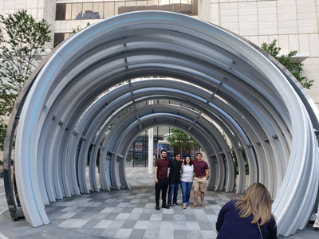
Jeff P from Berkeley, CA, USA, CC BY 2.0, via Wikimedia Commons; Image Size Adjusted
AT&T Discovery District
Technology-focused entertainment district featuring interactive digital displays, public art, event spaces, outdoor gathering areas, restaurants, and one of the largest media walls in the country.
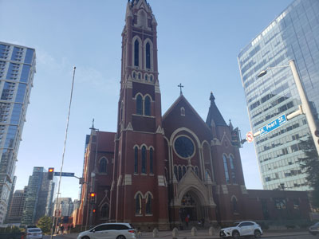
Jeff P from Berkeley, CA, USA, CC BY 2.0, via Wikimedia Commons; Image Size Adjusted
Cathedral Santuario de Guadalupe
Cathedral church dates from the late 19th century and is located in the Arts District of downtown Dallas
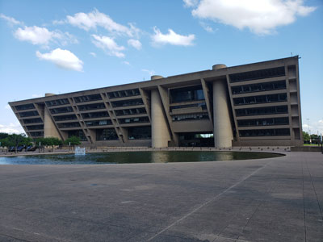
Jeff P from Berkeley, CA, USA, CC BY 2.0, via Wikimedia Commons; Image Size Adjusted
Dallas City Hall
Grand Beaux-Arts complex of city and federal offices and seat of municipal government of the city of Dallas
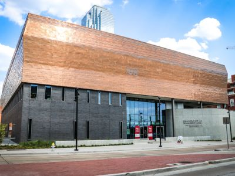
Jeff P from Berkeley, CA, USA, CC BY 2.0, via Wikimedia Commons; Image Size Adjusted
Dallas Holocaust and Human Rights Museum
Immersive museum featuring interactive exhibits on genocide, civil rights, and social justice through historical and contemporary lenses.

Jeff P from Berkeley, CA, USA, CC BY 2.0, via Wikimedia Commons; Image Size Adjusted
Dallas Museum of Art
Expansive cultural institution featuring over 25,000 works of art from around the world, spanning 5,000 years of human creativity across multiple galleries and rotating exhibitions.
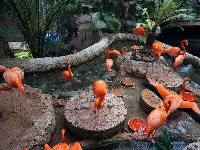
Jeff P from Berkeley, CA, USA, CC BY 2.0, via Wikimedia Commons; Image Size Adjusted
Dallas World Aquarium
Indoor wildlife sanctuary featuring rainforest and aquatic habitats with exotic birds, mammals, reptiles, and marine life in immersive naturalistic environments.
Jeff P from Berkeley, CA, USA, CC BY 2.0, via Wikimedia Commons; Image Size Adjusted
Dealey Plaza
City park in downtown Dallas was the location of the assassination of United States President John F. Kennedy, on November 22, 1963
Jeff P from Berkeley, CA, USA, CC BY 2.0, via Wikimedia Commons; Image Size Adjusted
Deep Ellum
Neighborhood composed largely of arts and entertainment venues near downtown in East Dallas
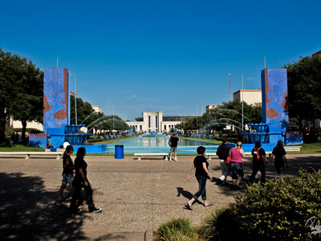
Jeff P from Berkeley, CA, USA, CC BY 2.0, via Wikimedia Commons; Image Size Adjusted
Fair Park
Recreational and educational complex located immediately east of downtown with many of the buildings were constructed for the Texas Centennial Exposition in 1936
Jeff P from Berkeley, CA, USA, CC BY 2.0, via Wikimedia Commons; Image Size Adjusted
Frontiers of Flight Museum
A hands-on aviation museum showcasing historic aircraft, space artifacts, and interactive exhibits that trace the history of flight.
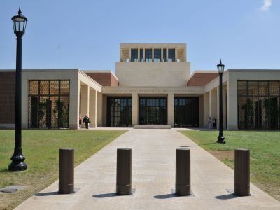
Jeff P from Berkeley, CA, USA, CC BY 2.0, via Wikimedia Commons; Image Size Adjusted
George W. Bush Presidential Center
Comprehensive presidential complex featuring a museum, library, and policy institute with exhibits on pivotal events, leadership, and American history.
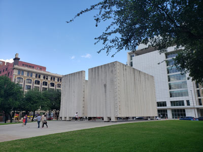
Jeff P from Berkeley, CA, USA, CC BY 2.0, via Wikimedia Commons; Image Size Adjusted
John F. Kennedy Mmeorial
Cenotaph memorial featuring a 50-by-50-foot open space with 30-foot vertically scored concrete walls
-1000.jpgspace-center-houston/space-center-houston-hero-400.jpg)
Jeff P from Berkeley, CA, USA, CC BY 2.0, via Wikimedia Commons; Image Size Adjusted
Katy Trail
Jogging, walking, inline skating, and bicycling path that runs through the Uptown and Oak Lawn areas of Dallas, Texas, following the path of the old Missouri-Kansas-Texas Railroad
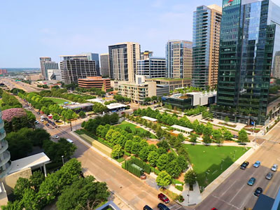
Jeff P from Berkeley, CA, USA, CC BY 2.0, via Wikimedia Commons; Image Size Adjusted
Klyde Warren Park
Urban green space built over a freeway featuring lawns, fountains, playgrounds, dining venues, fitness programs, cultural events, and family-friendly recreational activities.
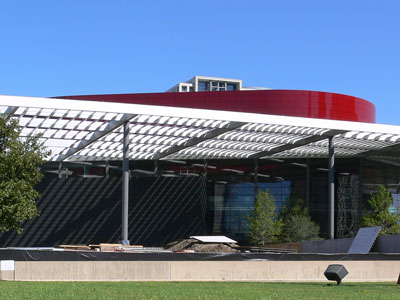
Jeff P from Berkeley, CA, USA, CC BY 2.0, via Wikimedia Commons; Image Size Adjusted
Margot and Bill Winspear Opera House
Acoustically acclaimed performing arts venue hosting opera, ballet, Broadway productions, concerts, and cultural events within a striking modern architectural setting.
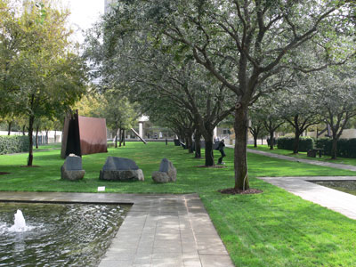
Jeff P from Berkeley, CA, USA, CC BY 2.0, via Wikimedia Commons; Image Size Adjusted
Nasher Sculpture Center
Museum and sculpture garden showcasing one of the world's finest collections of modern and contemporary sculpture, featuring works by internationally renowned artists in a refined indoor and outdoor setting.
Jeff P from Berkeley, CA, USA, CC BY 2.0, via Wikimedia Commons; Image Size Adjusted
Perot Museum of Nature and Science
Five-level science and natural history museum offering interactive exhibits on paleontology, space, energy, engineering, and the human body in a striking modern building.
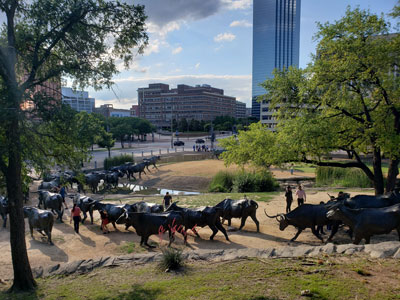
Jeff P from Berkeley, CA, USA, CC BY 2.0, via Wikimedia Commons; Image Size Adjusted
Pioneer Plaza
Large public park featuring a dramatic bronze sculpture installation of longhorn cattle and cowboys that commemorates the historic cattle drives of the American West.
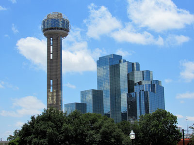
Jeff P from Berkeley, CA, USA, CC BY 2.0, via Wikimedia Commons; Image Size Adjusted
Reunion Tower
561 ft (171 m) observation tower in Dallas, Texas and one of the city's most recognizable landmarks
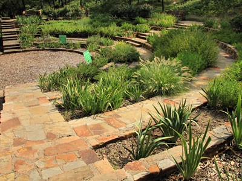
Jeff P from Berkeley, CA, USA, CC BY 2.0, via Wikimedia Commons; Image Size Adjusted
Reverchon Park
Historic urban park featuring sports facilities, walking trails, open green spaces, mature trees, picnic areas, and access to one of the city's most popular recreational corridors.
Jeff P from Berkeley, CA, USA, CC BY 2.0, via Wikimedia Commons; Image Size Adjusted
Sixth Floor Museum at Dealey Plaza
Museum examining the life, times, death, and legacy of United States President John F. Kennedy and is located at the very spot from which Lee Harvey Oswald shot and killed the President on November 22, 1963
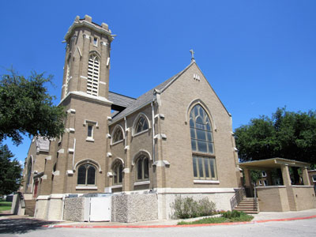
Jeff P from Berkeley, CA, USA, CC BY 2.0, via Wikimedia Commons; Image Size Adjusted
St Matthews Cathedral
Historic Gothic Revival cathedral featuring soaring architecture, stained-glass windows, religious artwork, and an active congregation serving worshippers and visitors year-round.
Jeff P from Berkeley, CA, USA, CC BY 2.0, via Wikimedia Commons; Image Size Adjusted
White Rock Lake Park
Expansive urban park surrounding a scenic reservoir with trails, picnic areas, birdwatching spots, and water activities for outdoor enthusiasts.
Overview
Dallas is a major city in North Texas and the anchor of the sprawling Dallas-Fort Worth metroplex, home to more than eight million people and the fourth-largest metropolitan area in the United States. With about 1.3 million residents, Dallas is the ninth-largest city in the country. Built on cotton, cattle, oil and railroads, then reinvented by banking, technology, telecommunications and aviation, the city has grown into a national hub for business and travel, and it is the home of Texas Instruments, the State Fair of Texas, the Neiman Marcus department store and Dallas/Fort Worth International Airport, one of the busiest airports in the world. Its gleaming downtown skyline, "Big D" swagger and image, spread by the long-running TV series Dallas, make it one of the most recognizable cities in the American West.
Visitors come to Dallas to see the site of President John F. Kennedy's assassination, tour world-class art museums and the largest urban arts district in the country, shop at upscale malls and boutiques, enjoy Tex-Mex and barbecue, and cheer on legendary sports teams such as the Dallas Cowboys. The city is also a gateway to Fort Worth's cowboy culture, and it is a popular choice for conventions, concerts and family travel. Dallas is a place of contrasts: sleek glass towers and luxury shopping alongside honky-tonks, rodeos, cowboy boots and Texas hospitality.
Dallas was founded in the early 1840s when John Neely Bryan established a trading post at a natural crossing point on the Trinity River. It was incorporated as a city in 1856, and a French utopian colony called La Réunion added European settlers just before the Civil War. The arrival of the Houston and Texas Central Railroad in 1872 and the Texas and Pacific Railroad in 1873 made Dallas a crossroads for cotton and cattle, and it became a leading banking and insurance center, with the Federal Reserve Bank of Dallas established in 1914. The discovery of the huge East Texas oil field in 1930 added more wealth, and the 1936 Texas Centennial Exposition at Fair Park put the city on the national map. After World War II, defense, aviation and electronics industries, including Texas Instruments, where the integrated circuit was invented in 1958, drove rapid growth, and Dallas became a leading city for corporate headquarters. The Dallas Cowboys joined the NFL in 1960. The city's most defining historical moment came on November 22, 1963, when President John F. Kennedy was assassinated here.
On November 22, 1963, President John F. Kennedy was shot while riding in an open limousine through Dealey Plaza in downtown Dallas, an event that changed American history. Lee Harvey Oswald, who fired from a sixth-floor window of the Texas School Book Depository, was arrested the same day and killed two days later by Jack Ruby. Today, Dealey Plaza is a National Historic Landmark. Visitors can see the white "X" marks on Elm Street, the grassy knoll and the pergolas, and the Sixth Floor Museum at Dealey Plaza, located in the former Depository building, tells the story of the president's life, death and legacy with exhibits, photographs and film, as well as a view from the corner window. Nearby, the John F. Kennedy Memorial Plaza features a quiet open cenotaph designed by architect Philip Johnson, and the Old Red Museum and Pioneer Plaza are a short walk away.
Downtown Dallas is known for its modernist and postmodernist skyline, including Reunion Tower and its GeO-Deck observation level, I. M. Pei's Dallas City Hall, the neon-outlined Bank of America Plaza and Fountain Place, and the AT&T Discovery District. The Pioneer Plaza cattle drive sculpture of 49 bronze longhorns is one of the largest bronze monuments in the world, and the red neon Pegasus on the Magnolia Hotel is an icon. Other popular sites include Deep Ellum, a historic blues and live-music district full of murals and bars, the Dallas World Aquarium, Fair Park, a National Historic Landmark with the nation's largest collection of Art Deco exposition buildings, the Cathedral Santuario de Guadalupe and St. Matthew's Cathedral. The historic Swiss Avenue district preserves grand early 20th-century homes, and the Frontiers of Flight Museum is at Love Field.
The Dallas Arts District is the largest contiguous urban arts district in the nation, spanning 19 blocks. It is home to the Dallas Museum of Art, which offers free general admission, the Nasher Sculpture Center, the Crow Museum of Asian Art, the Morton H. Meyerson Symphony Center, the Winspear Opera House and the Wyly Theatre. Nearby are the Perot Museum of Nature and Science, the Dallas Holocaust and Human Rights Museum, the Barbier-Mueller Museum of pre-Columbian art and the George W. Bush Presidential Center on the SMU campus. Performing arts groups include the Dallas Symphony Orchestra, Dallas Opera and Texas Ballet Theater, and Fair Park hosts the State Fair of Texas, held each fall since 1886, with Big Tex and fried foods.
Klyde Warren Park is a green deck park built over a downtown freeway that hosts food trucks, concerts and events. The Katy Trail is a rail-trail built along a former railroad corridor, linking Uptown neighborhoods, and is one of the city's most popular spots for walking and biking. White Rock Lake Park is popular with boaters, joggers and cyclists, and sits next to the Dallas Arboretum and Botanical Garden, famous for its spring tulips and fall pumpkin displays. Reverchon Park and Fair Park offer more green space, and the Trinity River Audubon Center and Trinity Forest offer nature close to downtown.
Dallas has a big food scene. Texas barbecue, especially brisket, ribs and sausage, is a must, along with Tex-Mex, chicken-fried steak, Texas chili and steakhouses. The frozen margarita machine was invented in Dallas in 1971, and Tex-Mex dishes such as fajitas, queso and enchiladas are staples. The Michelin Guide began covering Texas in 2024 and recognized restaurants in Dallas, and chef-driven restaurants in Uptown, Bishop Arts, Deep Ellum and the Design District have gained national attention. International options include Korean, Vietnamese, Indian and Mexican restaurants in suburbs such as Plano, Richardson, Irving and Garland. Shopping is a major draw: Dallas is known for having more shopping centers per capita than any other U.S. city, including the upscale NorthPark Center, the Galleria Dallas, the Neiman Marcus flagship downtown, Highland Park Village, one of the first planned shopping centers in the country, and the Dallas Farmers Market.
Many of the region's top attractions are a short drive or train ride from Dallas. Thirty miles west, Fort Worth keeps its Western heritage alive at the Fort Worth Stockyards, where a twice-daily cattle drive passes down the street, and its Cultural District has the Kimbell Art Museum, the Modern Art Museum of Fort Worth and the Amon Carter Museum. Downtown Fort Worth includes the Water Gardens and Tarrant County Courthouse, and the Fort Worth Botanic Garden is a local favorite. In Arlington, between the two cities, are Six Flags Over Texas, Hurricane Harbor, AT&T Stadium and Globe Life Field. Other destinations include Grapevine's wineries and historic downtown, Frisco's The Star and PGA of America headquarters, Plano's Legacy West, Irving's Las Colinas and Southfork Ranch from the TV series Dallas. About 90 miles south, Waco Mammoth National Monument is a popular day trip.
The Dallas-Fort Worth metroplex is home to six major professional sports teams: the Dallas Cowboys (NFL), five-time Super Bowl champions and "America's Team," who play at AT&T Stadium in Arlington; the Dallas Mavericks (NBA), 2011 champions, and the Dallas Stars (NHL), 1999 Stanley Cup champions, who play at American Airlines Center in Dallas; the Texas Rangers (MLB), 2023 World Series champions, who play at Globe Life Field in Arlington; FC Dallas (MLS) in Frisco; and the Dallas Wings (WNBA) in Arlington. College sports are led by the SMU Mustangs, TCU Horned Frogs and North Texas Mean Green, and the Cotton Bowl at Fair Park hosts the annual Red River Rivalry between Texas and Oklahoma and the Cotton Bowl Classic.
Sources: This article uses material from the Wikipedia articles "Dallas" and "History of Dallas", which are released under the Creative Commons Attribution-Share-Alike License 3.0. Additional information from Visit Dallas, Visit Fort Worth, the Sixth Floor Museum at Dealey Plaza, the National Park Service, the Dallas Arts District, the State Fair of Texas, the Michelin Guide Texas, the National Weather Service Fort Worth, the City of Dallas and the official websites of the attractions, museums and teams mentioned.
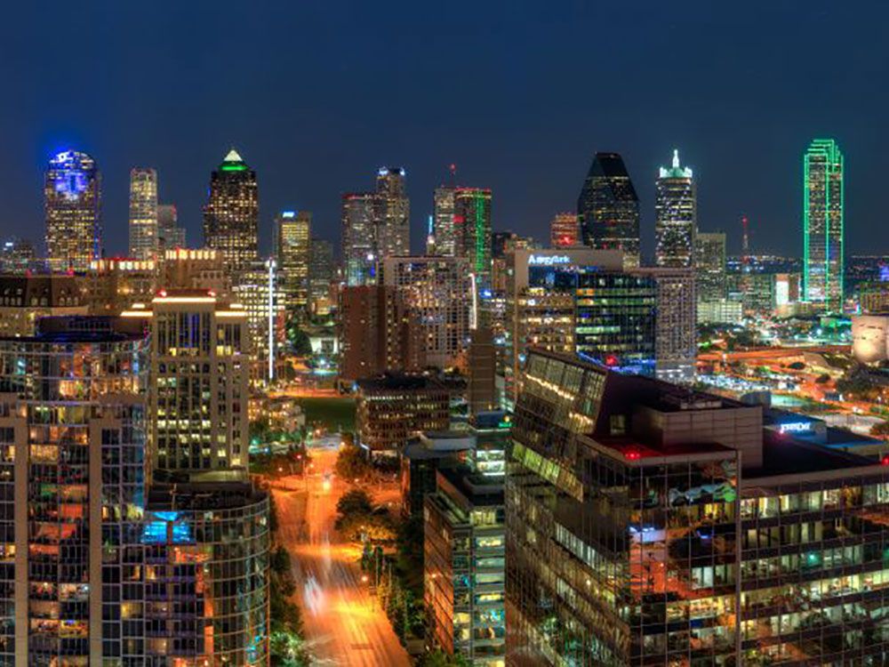
.jpg){kind=link}
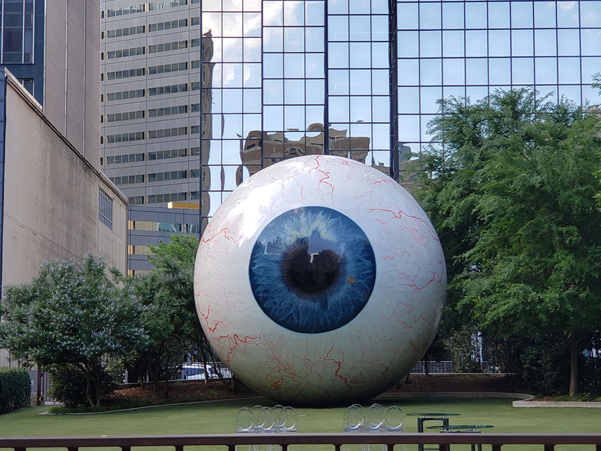
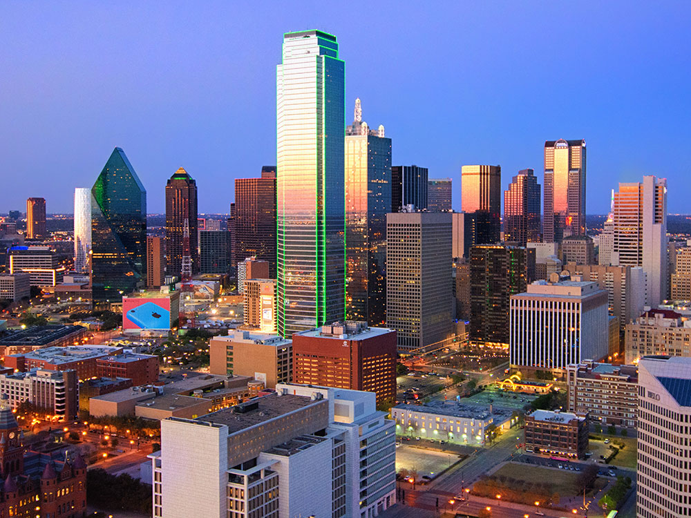

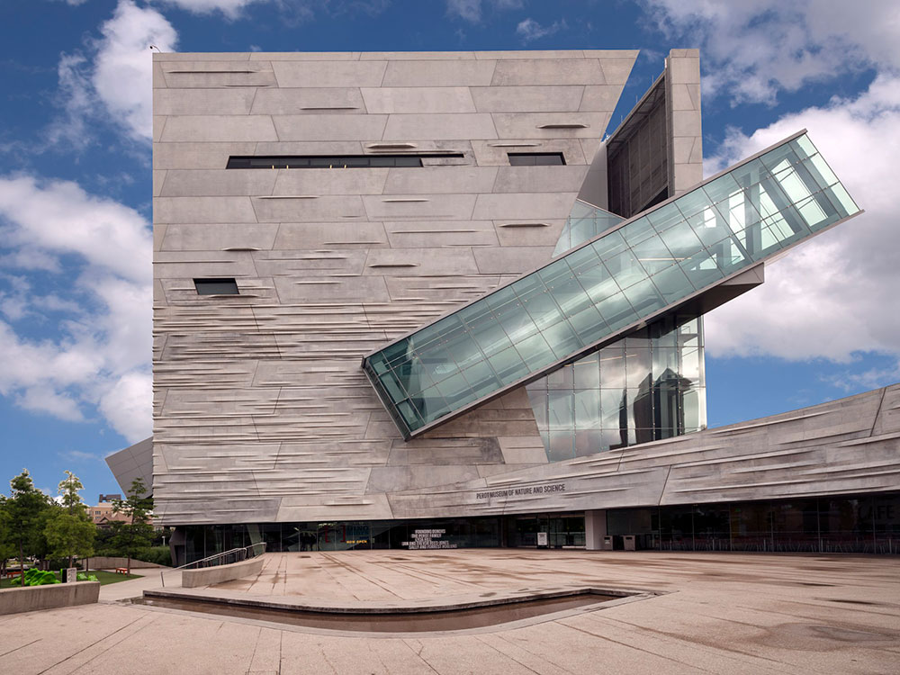